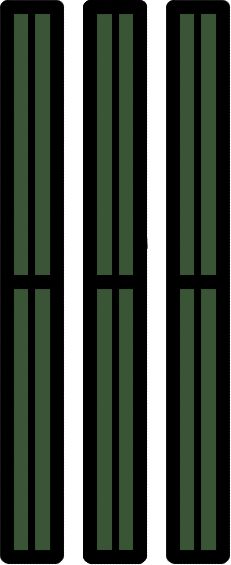
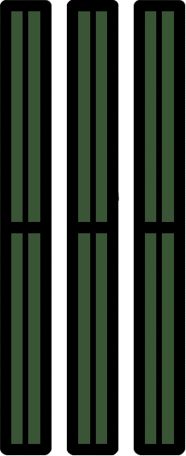

Bli mer kjent med teknologien vi bruker daglig.
I vårt daglige liv har vi oppgaver som krever hjelp fra en datamaskin for å fullføre. Det er to hovedtyper av enheter som folk brukte, bærbare datamaskiner og personlige datamaskiner (pc). selv om de ser forskjellige ut, har begge de samme komponentene og har sine styrker og svakheter. Modellen til høyre vil forklare hver komponents viktighet og funksjonalitet. Bli kjent med en bestemt del ved å klikke på den.


 



Lær mer om å sette opp en IP-adresse.